システム解説
クッキーストラテジャーには、単純なクリック放置にとどまらない複数のシステムがあります。ここでは、実際のゲームの各仕組みを一つずつ解説します。
1. クッキー生産と設備（強化）
画面中央のクッキーをタップすると、タップ1回ぶんのクッキーが手に入ります。基本のタップ力は「強い指」を買うほど強くなり、研究「指先の型」を取ると毎秒生産のおよそ0.4%がタップ力にも上乗せされます。上部には所持クッキー数と合計毎秒（1秒あたりの自動生産量）が表示されます。
「強化」タブでは設備を購入します。設備は大きく2種類――タップ力を上げるタップ系（強い指・神の指）と、毎秒の自動生産を上げる生産系――に分かれます。設備は1台買うごとに次の値段が上がるため、どこにどれだけ投資するかがそのまま伸びの差になります。まとめ買い（×1／×10／×100／最大）にも対応しています。
| 設備 | 種類 | 基本効果（1台あたり） |
|---|---|---|
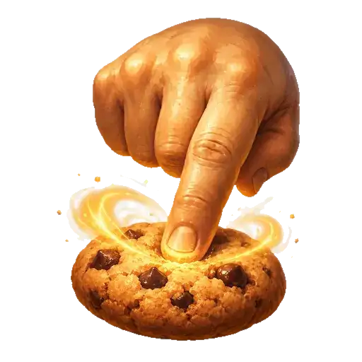 強い指 | タップ | 1タップ +1 |
| おばあちゃん | 毎秒 | 毎秒 +1 |
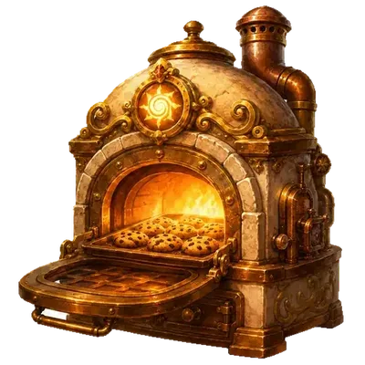 オーブン | 毎秒 | 毎秒 +8 |
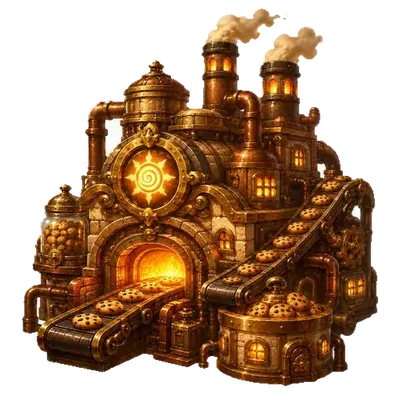 工場 | 毎秒 | 毎秒 +45 |
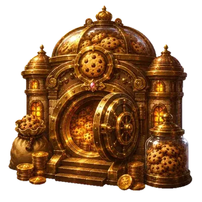 クッキー銀行 | 毎秒 | 毎秒 +260 |
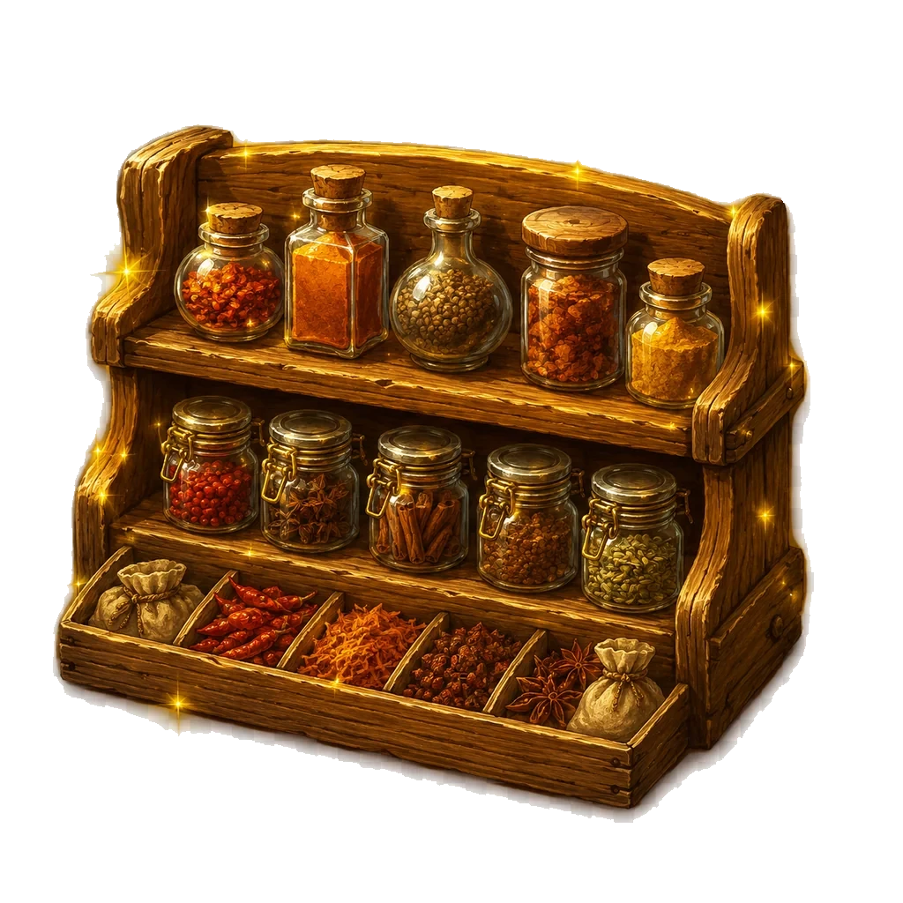 香料棚 | 毎秒 | 毎秒 +780 |
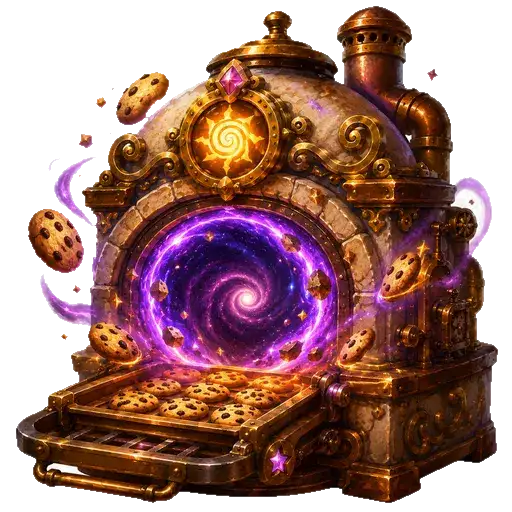 異世界クッキー炉 | 毎秒 | 毎秒 +1,600 |
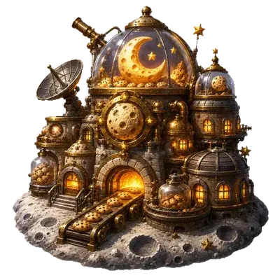 月面ベーカリー | 毎秒 | 毎秒 +9,800 |
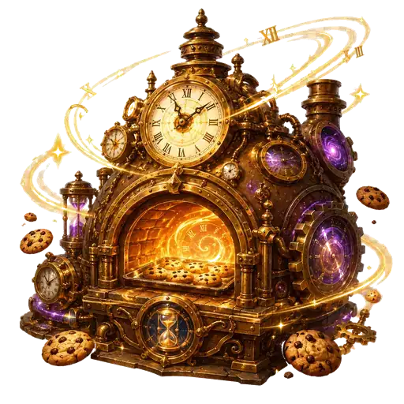 時空オーブン | 毎秒 | 毎秒 +6.5万 |
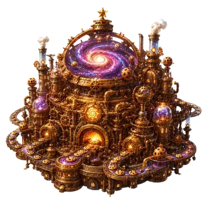 銀河工場 | 毎秒 | 毎秒 +45万 |
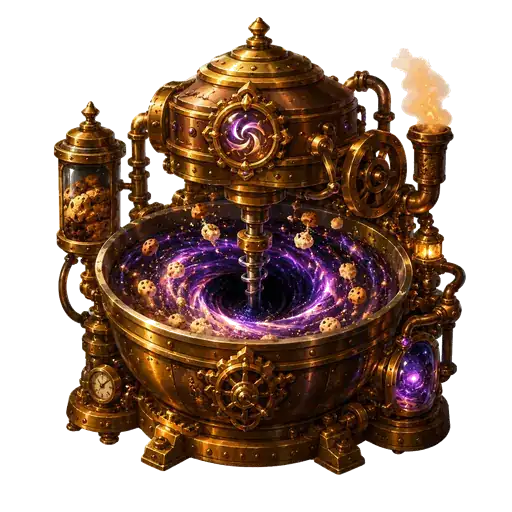 ブラックホールミキサー | 毎秒 | 毎秒 +330万 |
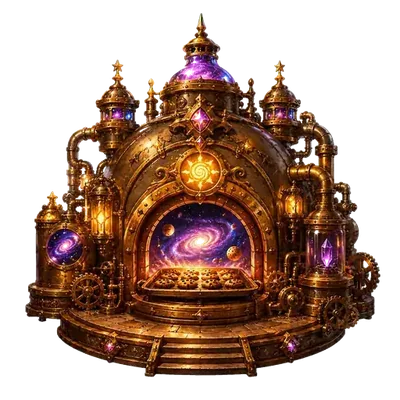 宇宙焼成炉 | 毎秒 | 毎秒 +2,600万 |
| 神の指 | タップ | 1タップ +260万（さらにタップ力全体を強化） |
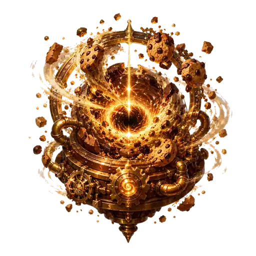 クッキー特異点 | 毎秒 | 毎秒 +2.3億 |
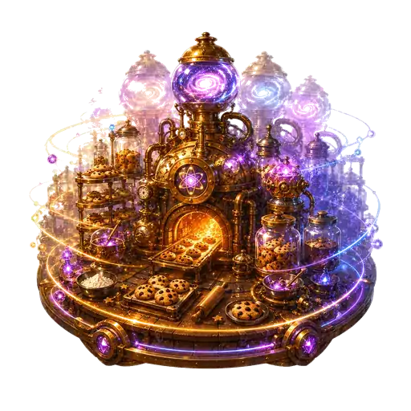 量子ベーカリー | 毎秒 | 毎秒 +21億 |
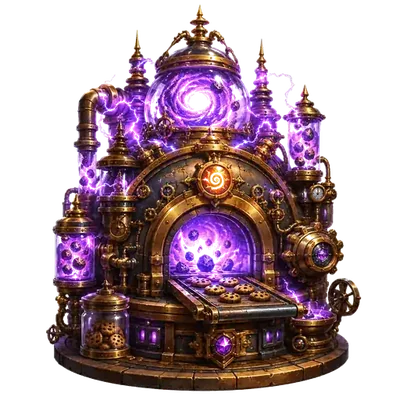 反物質オーブン | 毎秒 | 毎秒 +220億 |
上位の設備（月面ベーカリー以降）は、転生スキルツリーの「設備」系スキルを取ると解放されます。数値は基本効果で、研究やスキルによってさらに大きく伸びます。
2. 研究
「研究」タブでは、稼いだクッキーを使って研究を購入します。研究には大きく2系統あります。
- 設備連動の研究：その周回で対応する設備を購入していると解放され、特定の設備（おばあちゃん、オーブン、工場、香料棚、銀行……）の生産を大きく増幅します。一部は転生スキルで「段階2・段階3」が開放され、効果が積み増しされます。
- 実績研究（マイルストーン研究）：設備の所持数や各種の達成条件で解放される、永続的な倍率アップの研究です。コストは「そのときの毎秒生産の数十秒ぶん」に設定されており、常に手が届く範囲で少しずつ全体を底上げします。
解放できる研究があると研究タブが点滅して知らせます。研究はその周回の生産を伸ばす主役で、設備の購入と並行して進めるのが基本です。
3. 金のクッキー
プレイ中、ときどき金のクッキーが出現します。タップすると、まとまったクッキーを即時獲得したり、一定時間すべての生産がブーストされたりします。出現には間隔があり、見つけたら早めにタップするのがコツです。
転生スキルの「金クッキー」系や、モンスター撃破で得られる報酬カード（下記）によって、出現間隔の短縮・即時獲得量アップ・ブースト倍率アップ・ブースト時間の延長などを重ねられます。金のクッキー中心に伸ばす「金色型」の周回方針もあります。
4. クッキーモンスターと報酬
クッキーモンスターが出現したら、連打して撃破します。モンスターにはHPがあり、タップのダメージで削り切ると撃破です。撃破すると報酬を選択する画面が開き、提示されたカードから好きな1つを選んで強化できます。
モンスターには通常種のほか、群れ・タンク・スピーディ・金獣・ボスなどの種別があり、ステージによって出現する種類やHPが変わります。ボスを倒すとそのステージの「ボス核」素材が手に入ります。
報酬カードには、常時選べる基本カードと、転生スキルツリーで解禁する上位カードがあります。主な系統は次の通りです。
| 系統 | おもな効果の例 |
|---|---|
| 金クッキー系 | 金クッキー出現率アップ／金ブースト倍率アップ／金クッキー獲得量アップ／黄金連鎖 など |
| 狩り系 | 対モンスターダメージアップ／モンスター出現率アップ／濃い餌（滞在延長）／撃破数で全生産・毎秒が伸びる など |
| リスク系 | 連戦準備・狩猟集中・深追いの契約など、見返りが大きいぶんHPや時間切れのリスクを伴うカード |
| 設備系 | 設備の個別強化を底上げするカード など |
5. モンスター出現ノルマ（維持の戦略）
このゲームで最も独自性が強いのが、モンスターの出現ノルマです。モンスターはいつでも出るわけではなく、「その周回の必要ノルマ（クッキー量）」を満たしている間だけ出現します。
必要ノルマは周回の経過時間とともに上昇します。序盤（開始から約30秒）はノルマ0でウォームアップ、その後はゆるやかに増え、周回の中盤～後半（おおよそ8分・10分・14分あたり）で急に重くなる「壁」が段階的に立ち上がります。さらに2周目以降は、前回の周回の長さを基準にした到達判定も加わります。
あなたの生産がノルマの上昇に追いつけなくなると、「ノルマ終了：この周回のモンスターチャンス終了」となり、その周回はもうモンスターが出なくなります。つまり――
ノルマの上部ゲージは複数の「層」で表現され、深い層まで押し上げるほど（＝最高到達層が深いほど）、多くの設備・研究・スキルの効果が上がる設計になっています。研究「重力圧縮」を取ると、ノルマ未達の寸前で必要量を軽減して延命することもできます。
6. ステージ・周回・層
1回のプレイの区切りを周回と呼びます。周回のはじめに、スキル選択 → 周回方針の選択 → ステージの選択、の順で準備をしてからスタートします。
周回方針は途中変更できない5種類（標準／会心型／焼成型／狩猟型／金色型）で、その周回で狙う方向性や落ちやすい素材が変わります。
ステージは狩り場です。解放済みのステージから1つ選びます。ステージごとに出現モンスターや落とす素材、金のクッキーの出やすさなどが異なります。
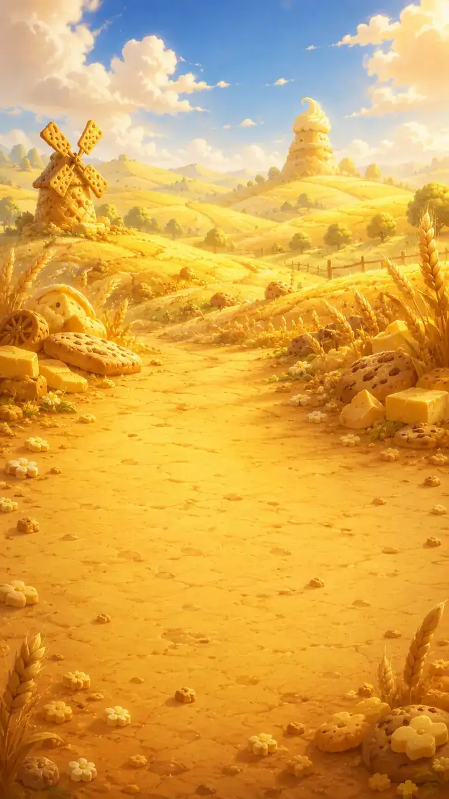
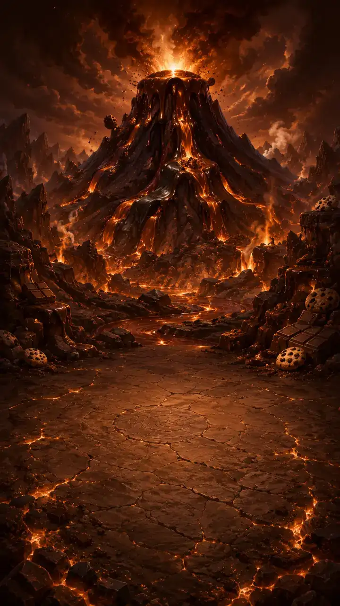
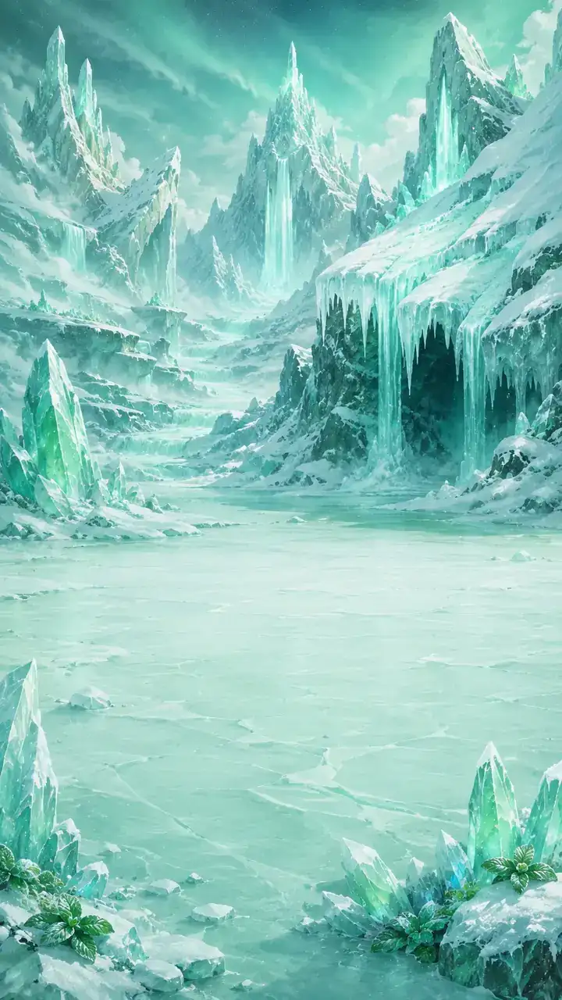
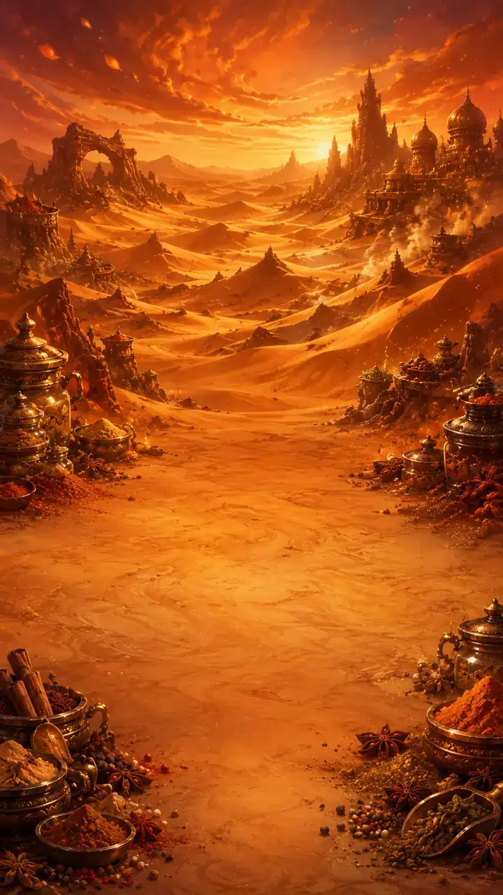
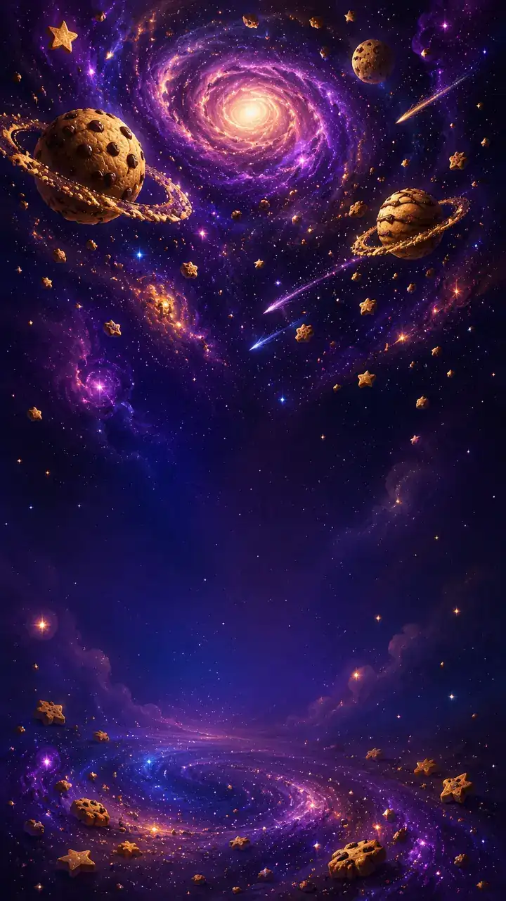
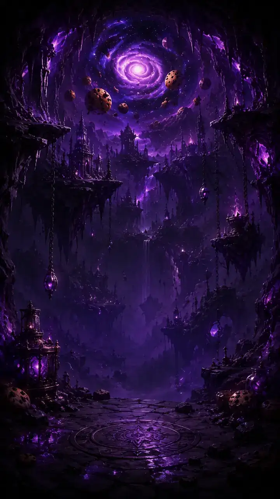
草原・火山・氷河・砂丘・銀河の5ステージの先には、さらに深く潜っていく深層領域が広がっています。次のステージは、そのステージで一定数のモンスターを倒す固定クエストを達成すると解放されます（ステージ解放は周回をまたいで引き継がれます）。
7. 転生とスキルツリー
所持クッキーが1億に達すると転生が解放されます（一度解放されれば以降は常に使えます）。転生すると、その周回の総クッキー量に応じた転生ポイントを獲得し、クッキーや一部の進行はリセットされます。一方で、転生ポイント・スキルツリー・素材・装備・レシピ・ステージ解放・討伐記録などは引き継がれ、周回を重ねるほど恒久的に強くなります。
転生に必要なコストは、あなた自身の「1周回での最高総クッキー数」を基準に決まります（最低1億）。この記録は転生した瞬間に更新されるため、表示コストが周回の途中で動くことはありません。
獲得した転生ポイントは、巨大なスキルツリーで消費します。中核の「分岐炉心」を起点に、タップ／自動焼成／経済／研究／設備／金クッキー／怪物狩り／報酬／周回支援／超越といった枝が広がり、設備や上位システム・報酬カードを解放したり、全体の生産倍率を高めたりできます。ツリーはスワイプで見渡し、ピンチで拡大縮小できます。頂点には最終スキル「超越体」があります。
8. 工房・装備・料理
転生スキル「素材の嗅覚」を取ると工房が解放され、モンスターが素材を落とすようになります。工房では2種類のものづくりができます。
- 装備の作成：色鉱石の粉やステージ素材を使って装備を作ります。装備は周回をまたいで残る永続の強化で、部位（武器・盾・防具・手・帽子・靴・アクセサリーなど）とランクがあります。1周回で作成できる回数には上限があります。
- 料理：素材を使って料理（
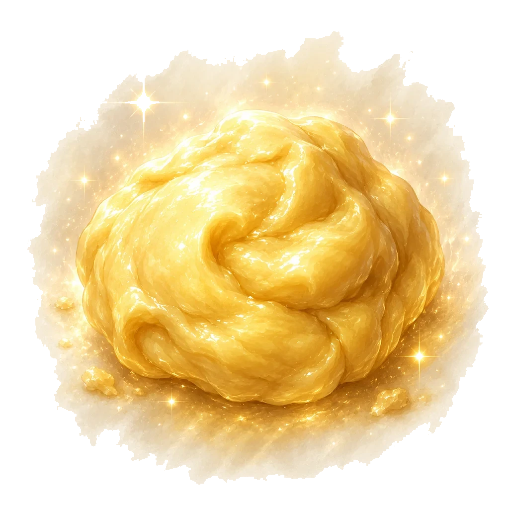
バタークッキー生地、濃厚ショコラ、ミントアイスサンド、狩人のシチュー、霜降りケーキ、星屑パフェ、虚空タルトなど）を焼きます。料理は一定時間の時限バフで、同時に複数はかけられません。効果は転生でリセットされますが、覚えたレシピは残ります。
素材が足りないときは、ワイルドカード素材「万能粉」（標準方針で入手）で一部を補えます。
9. 注文ボードと固定クエスト
転生スキル「注文ボード」を取ると注文ボードが解放されます。注文は時間制限つきの依頼で、達成すると一定時間の収入アップ・毎秒生産アップ・素材の獲得などの報酬がもらえます。依頼は1件ずつ提示され、時間内に条件を満たすと成功です。
これとは別に、期限のない固定クエストがあります。今いる最前線ステージで規定数のモンスターを倒すと、次のステージが解放されます。固定クエストの進行は周回をまたいで引き継がれます。
10. 素材とドロップ
モンスターを倒すと素材が落ちます。落ちるドロップは「どう倒したか」で変わるのが特徴です。おおまかには次のような対応です。
- 通常の撃破 → 基本素材
- 金ブースト中の撃破 → 「黄金粉」（このときだけ入手）
- HPを大きく上回るダメージでの一撃（オーバーキル）→ レア素材
- 短時間に連続撃破（狩り連鎖）→ ボス核系
- ノルマに余裕を持って倒す → 発酵素材
- 標準方針 → ワイルドカードの「万能粉」
集めた素材は工房で装備や料理に使います。ステージが深いほど、また倒し方を工夫するほど、狙った素材を集めやすくなります。
11. セーブ（ローカル＆クラウド）
セーブは自動です。進行状況はお使いのブラウザのローカルストレージに定期的に保存され、同じ端末・同じブラウザで開けば続きから遊べます。会員登録は不要です。
設定画面からGoogle アカウントでログインすると（任意）、セーブデータがクラウド（Google Firebase）にも自動保存され、別の端末でも同じアカウントで続きから遊べます。取り扱いの詳細はプライバシーポリシーをご覧ください。